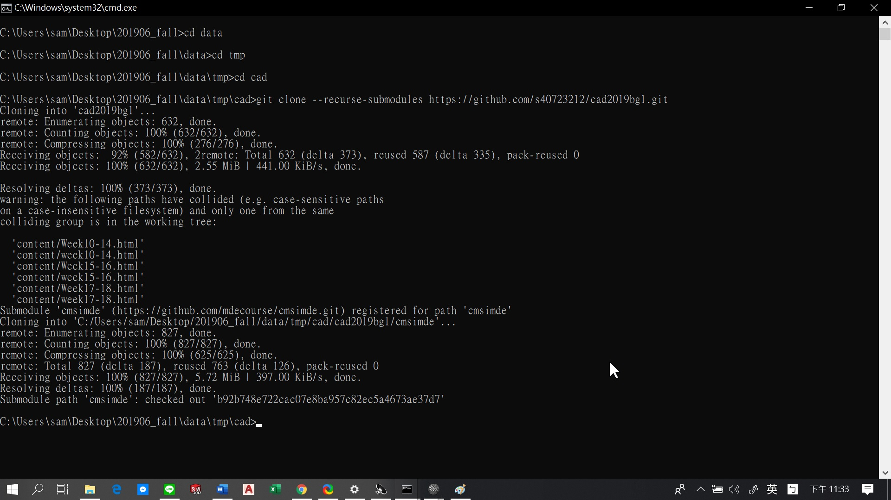
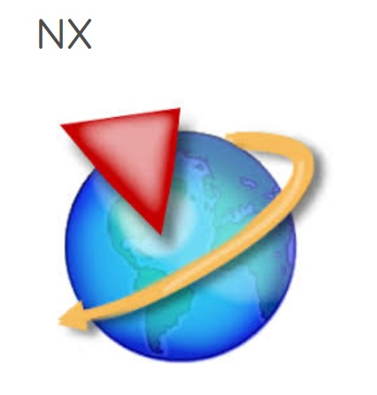

week06 <<
Previous Next >> 6.6練習
week10
分組並建立組別倉儲
1.由組長創建分組網站https://s40723221.github.io/cad2019bg2/content/index.html和分組倉儲https://github.com/s40723221/cad2019bg2


2.加入創建之分組網站
3.加入後用git clone submodules 組別倉儲網址

4.以git pull request的方式進行推送
5 .nx12 / nx3的操作手冊和教程

week11
校慶週
week12
1.翻譯電子書內容(第6章)
2.參考NX設計電子書 : http://mde.tw/cad2019/downloads/NX-12-for-Engineering- Design.pdf
第6章-部件建模
每天，我們都會看到許多將組件組裝成一個模型的示例，例如自行車，汽車和計算機。 所有這些產品都是通過設計和製造單個零件，然後將它們裝配在一起。 創造它們的設計師有仔細計劃每個零件，使它們完美地配合在一起以執行所需的操作功能。
在本章中，您將學習在裝配體建模中使用的兩種方法。 我們會以葉輪組件為例練習裝配建模。 這個的某些部分前面的章節已經對程序集進行了建模。
NX12裝配體是一個零件文件，其中包含各個零件。 它們被添加到零件文件中這樣一來，零件實際上就位於裝配體中並鏈接到原始零件。 這個無需為計算機中的各個部件創建單獨的內存空間。
所有零件都是可選的，可在設計過程中用於信息和配合。確保設計師想要的完美契合。 下圖顯示了組件如何添加以進行裝配。
6.1術語
部件
部件體是指向零件和/或子裝配體的指針的集合。 部件是零件文件，其中包含組件對象
組件對象
零部件對像是指向包含零部件的零件文件的非幾何指針幾何。 組件對象存儲諸如圖層，顏色，參考集，位置之類的信息相對於文件系統中零件的裝配體和路徑的零件數據。
組成部分
零件是指的零件文件裝配件中的零部件對象。 實際幾何存儲在組件中部分並被引用，而不是被部件
組件發生
零部件的出現是零部件文件中指向幾何的指針。
使用組件在不創建其他幾何圖形的情況下創建對零部件的一個或多個引用的實例。
參考集
參考集是零部件或子裝配體中的對象的命名集合，您可以用於簡化高層裝配中零部件的表示。
6.2組裝方法
創建任何裝配體模型有兩種基本方法。
- Top-Down Approach( 自上而下的方法 )
- Bottom-Up Approach( 自下而上的方法 )
6.2.1自上而下的方法
通過這種方法，將創建裝配零件文件。首先，在該文件中創建組件， 然後各個零件均已建模。
這類建模在新設計中很有用。
6.2.2自下而上的方法
首先在傳統方式，然後添加到裝配中零件文件。 這項技術特別有用，以前的零件文件已經存在時設計，並且可以重複使用。
6.2.3混合搭配
您可以將這兩種方法結合起來必要的，以增加裝配的靈活性設計需求。
6.3部件與約束導航儀
部件導航器和約束導航器位於部件導航器的頂部屏幕左側的資源欄。
這些導航器向您展示了構成裝配體，包括零件層次結構，零件名稱，有關零件的信息，例如是否
部分是只讀的，對像數和約束狀態。
6.4匹配約束
將零部件對象添加到裝配零件文件後，將對每個零部件對象進行配對與現有對象。 通過在部件的零部件上分配配合條件，您可以在這些組件之間建立位置關係或約束。 這些關係是
稱為交配約束。 配合條件由一個或多個配合約束組成。
有不同的配合約束，如下所述：
- 觸摸/對齊：選定要對齊的平面對象將是共面的，但平面的法線將指向同一方向。
圓柱物體的中心線將與每個其他。
- 同心 : 約束兩個分量的圓形或橢圓形邊緣，因此中心為重合併且邊緣的平面共 面。
- 距離：在兩個對象之間建立一個+/-距離（偏移）值
- 平行 ：所選對象將彼此平行。
- 垂直 ：所選對象將彼此垂直。
- 鍵合 ：創建焊接並將零件焊接在一起以作為單個對象移動。
- 居中 ：對象將在其他對象之間居中，即沿槽定位圓柱體
並將圓柱體在插槽中居中。
- 角度 ：這將在組件上選擇的兩個對象實體之間固定一個恆定的角度
組裝。
6.5範例
組裝葉輪組件。
其中建模了所有組件， 現在我們必須將它們插入組裝環境並應用將它們相對放置的約束。 組裝完成後，我們可以創建分解圖並準備繪圖。
在開始裝配建模之前，請在Hexabolt的葉輪下部殼體和葉輪上部殼體的每一側上分別製造三個通孔（每個殼體總共6個孔）。 孔的直徑應為0.25。
6.5.1開始組裝
➢創建一個新文件
➢在模型選項卡下選擇裝配
➢將單位設置為英寸
➢命名為Impeller_assembly.prt
或者，如果您在“建模應用程序”中並想要開始組裝，
➢在應用程序選項卡中打開程序集選項，然後會出現一個新的程序集選項卡
或者
➢單擊文件→程序集，如下所示
➢主頁菜單欄現在將顯示用於組裝的工具
在組件選項中：
- “添加”選項添加已創建其零件文件的新零部件對象。
- “新建”可讓您在裝配文件中創建新的零件幾何體
正在使用自頂向下方法進行組裝。
裝配約束允許您創建裝配約束，而移動零部件允許您可以將零部件重新放置在裝配中所需的任何位置。
6.5.2添加組件和約束
➢選擇添加
右側顯示的對話框將彈出。您可以從現有文件中選擇零件文件（應該已經顯示在“已加載的零件”選項卡中），也可以加載零件文件使用對話框中的打開文件選項。這將加載
選定的零件文件進入“加載的零件”對話框。
➢單擊打開圖標並選擇文件
Impeller_upper-casing.prt
➢在零件名稱對話框中單擊確定。
然後我們需要設置一個位置來放置坐標系
第一部分的。在位置組框中，保持“裝配位置”選項的默認“捕捉”。
➢單擊選擇對象
現在可以在透明模式下看到零件
➢單擊指向對話框圖標並創建[0，0，0]的坐標
➢單擊確定退出點對話框
注意：可以隨意使用“循環方向”選項來設置不同的方向。
➢在“放置”組框中，我們可以定義放置此組件的位置和方式。在這種情況下，
我們將保留默認選項。
➢單擊確定退出添加組件對話框
然後，您將看到一個彈出對話框。
➢單擊“是”為該零件創建一個“修復”約束。
讓我們繼續添加第二個組件，即下部外殼。
➢單擊裝配部分中的添加
➢從Loded Parts中選擇文件Impeller_lower-casing.prt或打開
➢在位置組框中，將選項更改為絕對–工作零件以放置新的部分位於當前工作部分的絕對原點
➢在“放置”組框中，首先切換“移動”單選按鈕並移動下殼體遠離上殼體，以便有足夠的空間選擇配合面。
➢然後，切換約束單選按鈕。現在，讓我們配對上殼體和下殼體。
您可以在“約束類型”框中的下拉菜單中訪問所有約束。
在這裡您可以看到不同的交配類型，上面已經解釋過了部分。
➢確保觸摸對齊圖標為在“類型”對話框中選擇
➢首先，選擇箭頭所在的面。
➢如右圖所示，在屏幕上單擊上殼體的表面。
注意：如果由於零件的位置而難以選擇面，則可以移動
通過在“放置”組框中切換“移動”並操縱其處理程序來調整它們。
讓我們添加另一個“觸摸對齊”約束。
➢確保您仍在使用觸摸對齊
➢單擊上殼體的平面，然後單擊相應的平面。
下殼體相對於上殼體受到約束。 現在讓我們添加葉輪。
➢選擇裝配→零部件→添加以將零部件添加到當前裝配中
➢打開文件Impeller_impeller.prt
➢在對話框中單擊確定
➢選擇絕對–裝配Locat的工作零件
➢切換約束按鈕
➢單擊“約束類型”框中的“距離”圖標
➢選擇兩個面，首先在葉輪上，然後在殼體上，
➢在“位置”組的“距離”框中，輸入值3
➢按Enter預覽當前裝配
預覽可能會顯示葉輪的方向與我們想要的方向相反。
➢要更改零件的方向或距離方向，請在“放置”窗口中，單擊“要約束的幾何”框中的“循環最後約束”按鈕。
從預覽中檢查裝配狀態，您可能需要單擊多個按鈕次以獲得理想的結果。 現在，葉輪將朝向正確的方向。
現在，我們將使用“中心”約束添加軸。
➢單擊裝配→零部件→添加
➢打開文件Impeller_shaft.prt
➢在對話框中單擊確定
➢在約束中選擇“觸摸對齊”圖標文字框在菜單中選擇推斷中心/軸選項幾何約束框
➢選擇兩個表面，首先在軸上，然後在葉輪上
➢保持觸摸對齊約束
➢在“幾何要約束”框中選擇“首選觸摸”選項
➢首先，選擇軸上的面，然後選擇葉輪中孔的底面
➢單擊裝配→零部件→添加
➢打開文件Impeller_hexa-bolt.prt
➢選擇“觸摸對齊”約束。 使用幾何中的推斷中心/軸選項約束框
➢首先，選擇螺栓上的外部圓柱螺紋，然後選擇螺栓的內表面。
➢再次在“觸摸對齊”約束中將“將幾何約束為約束”選項更改為“首選”觸摸
➢如圖所示，選擇螺栓上的平面和上殼體肋板上的平面
➢點擊確定
➢重複相同的步驟，在組件的所有孔中添加螺栓和螺母。
這樣就完成了葉輪的組裝。
注意：有一種簡單的方法來組裝螺栓和螺母套件。 而不是添加三個部分
您可以分別將這些組件分別組裝到另一個文件中。 這將是一個子裝配。 您可以插入此子裝配並將其與主裝配配對。
6.5.3分解圖
在本節中，我們將創建裝配體的分解圖，以顯示組成裝配體的零部件的分離的零件圖片。在當今的工業實踐中，這些此類視圖在裝配車間非常有用，有助於您更好地了解要修復的項目
哪裡。用戶應了解，爆炸裝配並不意味著零件的重新定位。
組件，但只能以拆卸的形式查看模型。您可以取消分解視圖您隨時可以重新獲得原始裝配視圖。讓我們爆炸葉輪組件。
➢選擇菜單→裝配體→分解圖→新爆炸
這將彈出一個對話框，詢問您的名稱。要創建的爆炸視圖。你可以留下名字，作為默認名稱，然後選擇確定，現在，NX環境處於爆炸視圖中環境，儘管您沒有發現任何區別。當我們開始爆炸裝配時，我們應該確定一個組件以使該組件作為參考。該組件應不能從其原始位置移動。對於葉輪組件，葉輪將是正確的選擇，因為它對於整個裝配至關重要。現在讓我們開始分解這些組件。
➢右鍵單擊上殼體，然後選擇“編輯爆炸”
“編輯爆炸”窗口將與組件上的坐標手柄一起彈出。
➢點擊Z軸； 按住鼠標並向上拖動，直到顯示距離，顯示-20（如果設計方向相反，則用+20代替）
➢點擊確定
➢右鍵單擊下部外殼，然後選擇“編輯爆炸”
再次，這將彈出一個對話框，用於編輯爆炸和零件上的坐標系。
➢點擊Z軸； 按住鼠標並拖動向下直到距離讀數顯示20，如右圖所示
側。
➢右鍵單擊軸，然後選擇“編輯”爆炸
➢這次點擊X軸； 按住按鈕並拖動到右側，直到閱讀
距離顯示為-25
➢選擇確定
➢單擊組件中的所有六個六角形螺栓
➢右鍵單擊其中之一，然後選擇“編輯爆炸”
➢這次單擊Z軸； 按住按鈕並向上拖動，直到讀取距離顯示25，如下圖所示。 這將移動所有六個螺栓在一起到相同的距離。
➢選擇確定
➢同樣，將六個墊圈和六個六角螺母向下移至-30和-35，分別是裝配體的分解圖。 您可以旋轉並查看其外觀。
如果您想回到原始的未爆炸視圖，
➢單擊功能區中的爆炸視圖→從下拉菜單中選擇（無爆炸）
如下所示，您可以取消分解裝配中的任何零部件，
➢右鍵單擊該組件，然後選擇“展開”。
如果要解開所有組件
➢選擇裝配體→爆炸視圖→展開零件
week06 <<
Previous Next >> 6.6練習